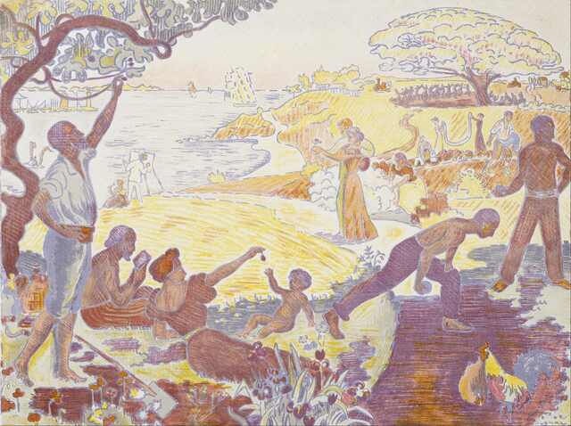

Åtta harmoniserande delar i helheten

- Liv och Hälsa: Prioritera hälsovårdssystem som garanterar
tillgång till kvalitativ vård för alla och program som säkerställer
att grundläggande behov som ren luft, rent vatten och adekvat näring
uppfylls.
- Kroppslig integritet: Verka för säkra offentliga rum och en
effektiv rättsordning som skyddar individens rätt att röra sig fritt
och tryggt.
- Sinne och Känslor: Investera i utbildningssystem som främjar
kritiskt tänkande, emotionell utveckling och kreativitet från tidig
barndom till högre utbildning.
- Praktiskt förnuft: Skapa tillfällen för livslångt lärande och
självutveckling samt stödja individers förmåga att göra informerade
val om sina liv.
- Samarbete med andra: Främja och upprätthålla sociala institutioner
som stöder gemenskap och civilsamhällets engagemang.
- Andra arter: Verka för hållbar utveckling och miljöskydd, så att
människor kan ha en meningsfull relation med och omsorg om naturen.
- Lek: Stödja kultur och fritidsaktiviteter genom offentliga
platser och program som främjar konstnärligt uttryck, sport och den
fria leken.
- Kontroll över sin egen miljö: Säkerställa demokratiskt
deltagande och representation, samt verka för lika möjligheter i
arbetslivet och rättvisa villkor i bostads- och marknadsförhållanden.
I varje av dessa områden skulle Monisternas
politik fokusera på att skapa förutsättningar där individer inte bara
har tillgång till grundläggande resurser utan också stöds i att
utveckla och utöva sina förmågor för att leva ett fullödigt och
självständigt liv.